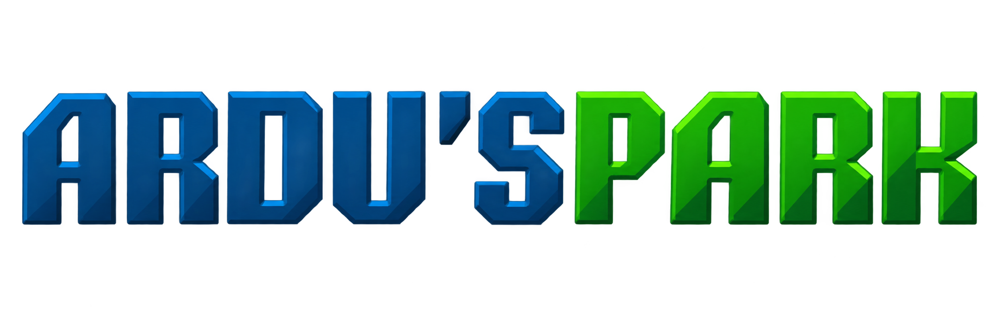

A Ardu'sPark é uma empresa inovadora focada no desenvolvimento de soluções tecnológicas inteligentes baseadas em Arduino e automação. Nosso objetivo é unir criatividade, engenharia e sustentabilidade para criar protótipos que solucionem problemas reais do dia a dia.
A equipe da Ardu'sPark é multidisciplinar e integrada. Trabalhamos de forma colaborativa, onde cada membro assume um papel estratégico na programação, robótica, recursos humanos, marketing e mídia para dar vida aos nossos projetos
Clique no botão para saber mais datalhes sobre o menbro da equipe: